红黑树(Red-Black Tree，简称R-B Tree)，它一种特殊的二叉查找树。
一、红黑树介绍
1. 基本定义
红黑树(Red-Black Tree，简称R-B Tree)，它一种特殊的二叉查找树。
红黑树是特殊的二叉查找树，意味着它满足二叉查找树的特征：任意一个节点所包含的键值，大于等于左孩子的键值，小于等于右孩子的键值。
红黑树区别于普通话二叉树在于每个节点上都有存储位表示节点的颜色，颜色是红(Red)或黑(Black)。
同时节点颜色有以下的特性:
(1) 每个节点或者是黑色，或者是红色。
(2) 根节点是黑色。
(3) 每个叶子节点是黑色。 [注意：这里叶子节点，是指为空的叶子节点！]
(4) 如果一个节点是红色的，则它的子节点必须是黑色的。[一条线上不会出现两个及以上连续的红色节点，可能出现连续黑色节点]
(5) 从一个节点到该节点的子孙节点的所有路径上包含相同数目的黑节点。
在二叉树和上述五个特性的限制下，从根节点到叶子节点的最长路径不多于最短路径的两倍。二叉树在极端情况下会退化成链表，此时查询的复杂度为O(n)，就没有了二叉树的特性减少时间复杂度的特点，如下图右侧，但红黑树会保证每个分枝的长度不会相差太多，确保时间性能在O(logN)左右。
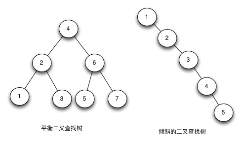
2. 引理
- 2.1 一个有n个节点的红黑树高度至多为2lg(n+1)
二、红黑树构建
红黑树的构建关键在于，添加和节点后，需要经过变色和旋转调整，以满足红黑树的五点要求，但不是每次添加节点都需要变色和旋转，需要判断不同情形，下面先介绍红黑树添加节点的情况处理：
为方便上下文结合代码理解，这里先给出基本的节点和树的代码：
- 节点颜色
1 | // NodeColor.java |
- 节点（使用lombok注解，省去了构造方法和getter，setter方法）
注意：空节点的默认颜色为黑色，新添加节点的默认颜色为红色
1 | // RedBlackTreeNode.java |
1 | // RedBlackTree.java |
（1）、添加节点
首先找到节点的添加位置，插入节点
1
2
3
4
5
6
7
8
9
10
11
12
13
14
15
16
17
18
19
20
21
22
23
24
25
26
27
28
29
30
31
32
33
34
35
36
37
38
39
40
41
42/**
* 插入节点
* @param T
* @param z
*/
public void RB_INSERT(RedBlackTree T, RedBlackTreeNode z) {
// 临时变量节点y,存储临时节点，默认为nil
RedBlackTreeNode y = RedBlackTree.nil;
// 获取根节点，从根节点开始遍历查询
RedBlackTreeNode x = T.getRoot();
// 循环二分查找合适的插入点
while (IsNil(x) == false) {
// 保存当前节点，作为结果的根节点
y = x;
if (z.getKey() < x.getKey()){
// 添加节点值小于节点的值，查找左子树
x = x.getLeft();
}else {
// 添加节点值大于节点的值，查找右子树
x = x.getRight();
}
}
// 临时节点y设置为插入点的父节点
z.setParent(y);
if (IsNil(y) == true) {
// 空树时设置z为根节点
T.setRoot((z));
}else if (z.getKey() < y.getKey()){
// 新节点为左子节点
y.setLeft(z);
}else {
// 新节点为右子节点
y.setRight(z);
}
// 将插入节点的左右子树设为nil，颜色为红色，已经在构造时设置过，可以省略
z.setLeft(RedBlackTree.nil);
z.setRight(RedBlackTree.nil);
z.setColor(NodeColor.Red);
// 插入调整
RB_INSERT_FIXUP(T, z);
}根据不同情况，进行变色和旋转
1 插入情况总结
情况1：如果是根节点，直接插入就完事了（插入还是默认为红色，然后在代码的最后把根目录设置为黑色）
情况2：插入节点的父亲为黑色，也一样，插入就完事了，不用做任何的改动
情况3：插入节点的父亲为红色，叔叔节点（插入节点的爷爷的另一个子节点）的颜色也是红色
情况4：插入节点的父亲为红色，叔叔节点节点为黑色
情况4最麻烦，因为需要再做一次判断，
（爷爷节点用G表示，父：F，叔叔：U，插入节点：M）
注意，下面四张图U节点都是Nil节点（也就是一个不存在的节点，根据红黑树的特点，这个节点的颜色也是黑色），下图中画出来是为了便于理解。
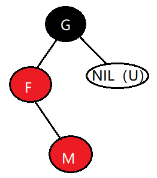
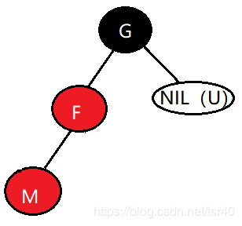
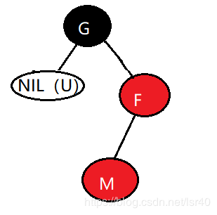
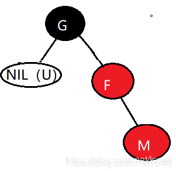
四张图从左到右，从上到下：
图1：父节点是爷爷节点左节点，插入节点是父节点的右节点；
图2：父节点是爷爷节点左节点，插入节点是父节点的左节点；
图3：父节点是爷爷节点右节点，插入节点是父节点的左节点；
图4：父节点是爷爷节点右节点，插入节点是父节点的右节点；
四种情况总结来说，主要是爷爷节点、爸爸节点和插入节点是否是三点一线，如果不是三点一线，如图1和图3，就属于情况4的阶段1；如果是三点一线，如图2和图4，就属于情况4的阶段2。
阶段1和阶段2有什么联系吗？阶段1的处理方式，就是经过旋转变成阶段2后，再做阶段2的旋转处理。
2.2 插入情况处理
情况1：表示插入的根节点，直接把新节点的红色变成黑色就可以了。
情况2：父节点是黑色，直接插入，不做任何旋转和变色处理。
情况3：父节点是红色，叔叔节点也是红色，直接把叔叔节点和父节点的颜色变成黑色，爷爷节点变成红色，并由爷爷节点继续上溯判断，爷爷节点的父节点颜色，做类似的处理。（因为太爷爷节点可能为红色，将爷爷节点变成红色，可能会和特性4冲突，必须向上继续判断）。
情况4：父节点是红色，叔叔节点是黑色，这种情况较为复杂，先判断处于那个阶段。
- 如果符合阶段1，图1和图3情形，图1就对F节点做左旋，图3就对F节点右旋，如下图，经过旋转，变成阶段2，即插入节点、父节点和爷爷节三点一线。
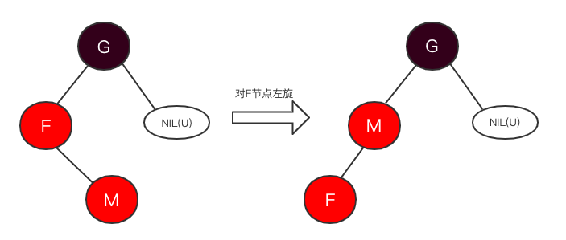
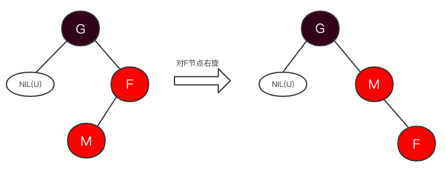
- 如果符合阶段2，图2和图4情形，图2就对G节点右旋，然后将G变为红色，如下图：
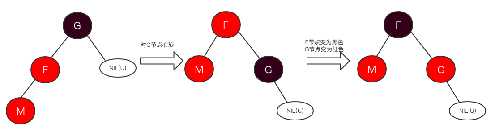
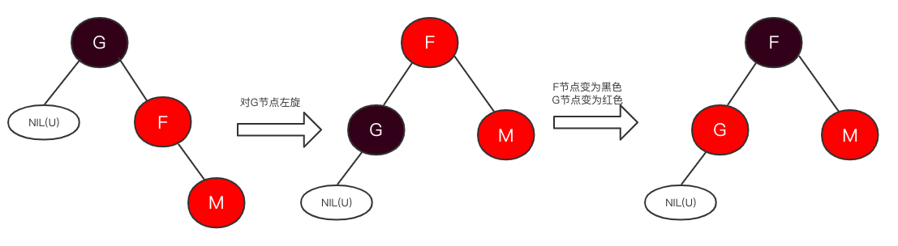
代码实现
综合上述的不同场景，整体逻辑流程总结如下图：
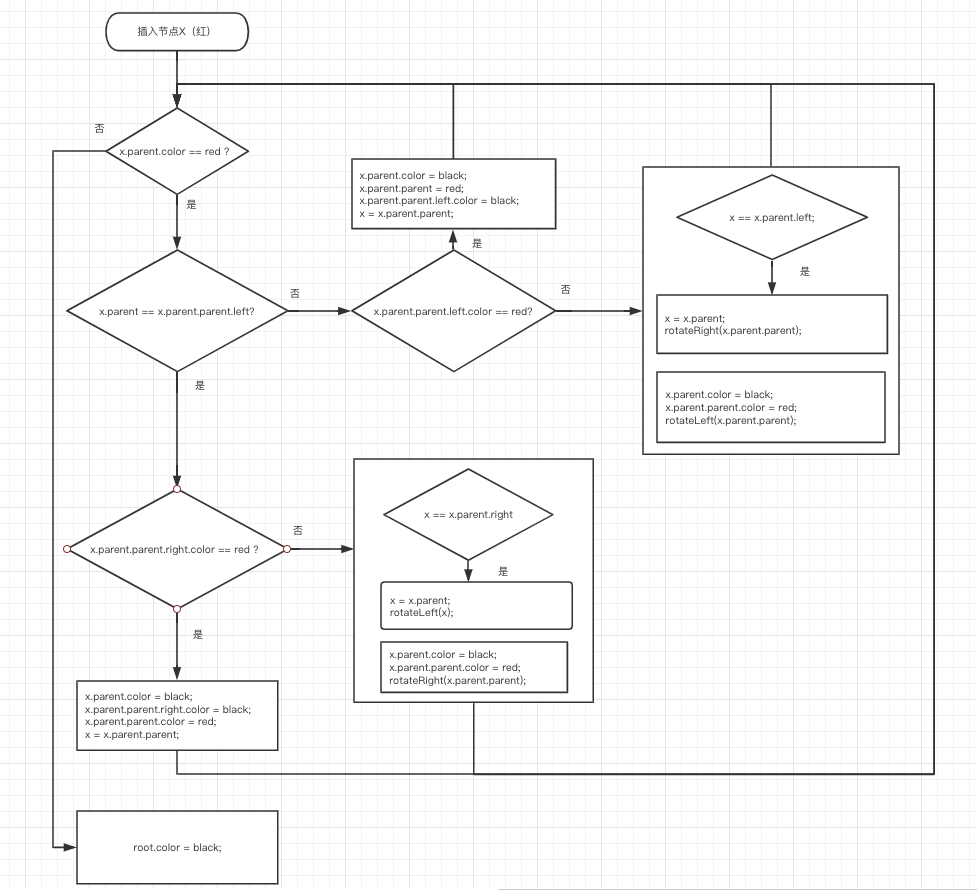
具体代码实现代码如下：
1 | // RedBlackTree.java |
（2）、删除节点
删除节点的情况略复杂于添加节点，和添加节点类似，分两步进行，首先删除节点，然后对删除后结果进行平衡。
删除节点
删除节点可以分几种情况加以处理：
情况1：d节点两个子节点都有；
情况2：d节点一个子节点也没有；
情况3：d节点有一个子节点；
情况1下，先找到d节点的后继节点，即d右子树的最小节点，将后继节点的值替换到删除节点位置，颜色不需要变化，然后将删除d节点的情况变为删除后继节点的情况，即将后继节点赋值给d，因为后继节点肯定只有右子树，符合情况2下的一种情况，下面再详细介绍；
查找后继节点的代码实现：
1 |
|
删除节点代码实现：
1 | // RedBlackTree.java |
重新平衡树有多种情形 ，下面一一介绍：
情形1: d节点兄弟节点s为红色，此时s一定有两个子节点，如下图；
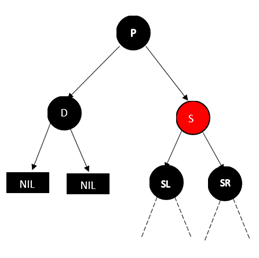
操作：改变s和d的父节点p的颜色，改变后s为黑色，p为红色，p节点左旋一次，d节点的兄弟节点变为s节点的右子节点，一定为黑色，变成情形2、情形3或者情形4继续处理；
情形2： s和两个子节点均为黑色，如下图：

操作：将s变为红色，此时，d的父节点两个子树的黑色都减少一层（相对于整个树的其他路径），为了补偿这层减少的黑色，将d置为d的父节点，继续遍历，直到遇到第一个红色节点，变为黑色，此时，减少的一层黑色补充回来，达到平衡状态（此时也不关心p节点的颜色，只要在上层找到一个红色节点，变为黑色，整个树就可以达到平衡状态）；
情形3：d节点兄弟节点s是黑色，s的左孩子是红色，右孩子是黑色，如下图：

操作：将s和s的左节点颜色互换，s进行右旋，然后d的兄弟节点变为之前s的左节点为黑色，兄弟节点的右节点变为黑色，变成情形4继续处理；
情形4：d节点的兄弟节点s是黑色，s的右节点是红色，如下图：

操作：兄弟节点s设为d节点父节点的颜色，父节点p设为黑色，s节点的右节点设为黑色，p节点右旋，达到平衡状态；（这时，不论p节点的颜色是红还是黑，包含d路径的减少的黑色由右旋并设为黑色的p节点补充，d兄弟节点s一侧的黑色由s节点的右孩子补充，s节点变为之前的父节点，p子树达到和之前相同状态，平衡结束）；
总结
1. 插入节点总结
如果是根节点，直接插入，修改颜色为黑色，完成；
如果父节点是黑色，直接插入，不需要调整，完成；
如果父节点是红色，判断叔叔节点颜色：
3.1 叔叔节点也是红色，则将父节点和叔叔节点变为黑色，爷爷节点变为红色，由爷爷节点继续上溯进行平衡（祖爷爷节点可能为红色，爷爷变红后，会破坏平衡性，需要回溯判断）；
3.2 叔叔节点是黑色，也分为两种情况：
- 3.2.1 新节点，父节点，祖父节点不在三点一线，父节点需要旋转，达到三点一线（3.2.2情形）；
- 3.2.2 新节点，父节点，祖父节点在三点一线，祖父节点需要旋转（成为父节点的子节点，具体旋转方向看情况而定），父节点变为黑色，祖父节点变为红色，完成调整；
2. 删除节点总结
删除节点有左右节点，则寻找删除节点的后继节点（右子树的最小值），用后继节点的值替换删除节点的值，转而研究删除后继节点的删除问题（后继节点一定只有一个右子节点，或者没有子节点，变成情况2）；
只有一个节点或者没有子节点（没有子节点可认为左子节点是黑色），继续判断下列条件：
2.1 若删除节点颜色是红色，用子节点替换该节点（直接删除节点），不用调整；
2.2 若删除节点是黑色，用其子节点替换删除节点的位置，继续判断：
2.2.1 替换该节点的子节点是红色，该子节点变为黑色，完成调整；
2.2.2 替换该节点的子节点是黑色，继续下列判断：
2.2.2.1 删除节点的兄弟节点是红色（此时必有两个非空子节点），父节点变为红色，兄弟节点变为黑色，父节点做一次旋转（旋转后兄弟节点成为父节点父节点，旋转方向看具体情况而定），删除节点的兄弟节点一定为黑色，继续判断；
2.2.2.2 删除节点的兄弟节点和其两个子节点都是黑色，兄弟节点变为红色，将d置为d的父节点，继续向上遍历（d的父节点的两边子树都减少一层黑色，需要向上找到一个红色节点变为黑色，找回减少的这层黑色）；
2.2.2.3 近侄子节点是红色，远侄子节点为黑色，兄弟节点和近侄子节点换色（兄弟节点变为红色，近侄子节点变为黑色），兄弟节点旋转（近侄子节点成为兄弟节点父节点），旋转后近侄子节点成为兄弟节点一定为黑色，远侄子节点为之前兄弟节点一定是红色，变成下面一种情况；
2.2.2.4 远侄子节点为红色，则兄弟节点设为删除节点父节点的颜色，父节点设为黑色，远侄子节点设为黑色，父节点旋转一次（兄弟节点成为父节点的父节点，旋转方向看情况），达到平衡（删除节点一侧减少的黑色节点由父节点补充，不论父节点的颜色如何）。
参考资料
算法导论-第13章红黑树 删除